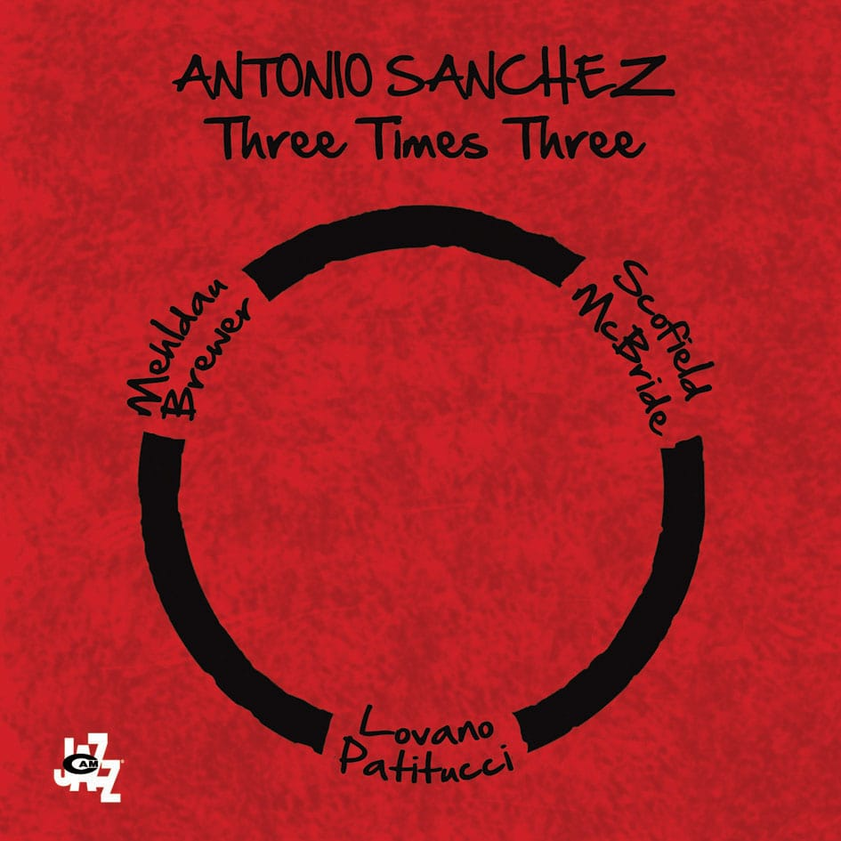

Три дядьки играют Баха (и не только) в джазовой обработке.
Страх
Никогда и ничего не пугался в своей жизни больше, чем сегодня, когда Тимур решил не ждать нас в магазине, а направился прямиком домой. Искали его 20 минут. И это были самые страшные 20 минут в моей жизни.
Tokyo Dense Fog
Daredevil
А у Сорвиголовы на айэмдиби рейтинг аж 9.2 и, по-моему, вполне соответствует.
GoGo Penguin — V2.0

Классные какие англичане!
Bon Iver - Holocene
Antonio Sanchez - Three Times Three

Очень приятный альбом от автора саундтрека к Бердману (и саундтрек сам кайф).